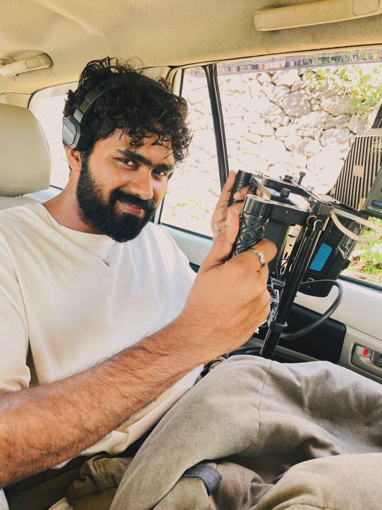

Kevin has been obsessed with stories for as long as I can remember. Not casually interested. Not “that would be nice someday.” Obsessed. His first unofficial debut happened when he was in the 9th grade, when he made a short film that managed to shake an entire school. Most people spend their school years trying not to be noticed. Kevin made something people could not stop talking about. I do not think everyone can do that. That is exactly how passionate he has always been.
And he has been chasing that passion ever since. For more than eight years, he has been writing, directing, learning, failing, improving, rewriting, and starting over. While most people only see the finished story, they do not see the years behind it. They do not see the late nights, the abandoned drafts, the ideas that refused to leave him alone, or the countless hours spent trying to make something better than it was yesterday. Kevin has not merely filled pages. He has filled books. He has built worlds, characters, scenes, conversations, and stories out of nothing but imagination and determination.
What makes him even more special is that he is not someone who keeps his dream only to himself. He is one of the kindest souls when it comes to helping anyone who wants a chance to explore cinema. If someone wants to learn, Kevin is the kind of person who will sit with them, explain what he knows, and encourage them to begin. He understands that you learn by spreading what you know, and he does exactly that. He has spent years not only working on his own craft, but also giving other people the courage to take their first step into the industry.
Unfortunately, Kevin does not always extend the same kindness to himself. Despite all the work he has put in, despite all the stories he has written, despite all the people he has helped, he occasionally becomes convinced that he is not talented enough, not ready enough, or somehow falling behind. This website exists because that assessment appears to be completely incorrect. The facts are simple: Kevin has already done things most people only talk about doing. He has spent years developing his craft. He has created stories that matter. He has helped others believe in their own creative dreams. And perhaps most importantly, he is much closer to achieving everything than he thinks.
So if Kevin is reading this during one of those moments where he is second guessing himself, this is a formal request to please stop believing every cruel thought your brain produces. You are not starting from the beginning. You are not untalented. You are not behind. You are a writer. You are a director. You are an overthinker, yes, but you are also someone who has come too far to start doubting the obvious now. If you agree, please leave a message of encouragement above. Kevin occasionally requires external assistance in adding some sense back into his brain.